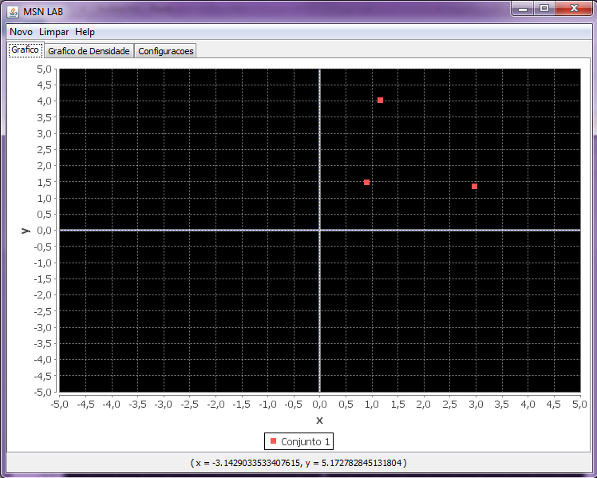
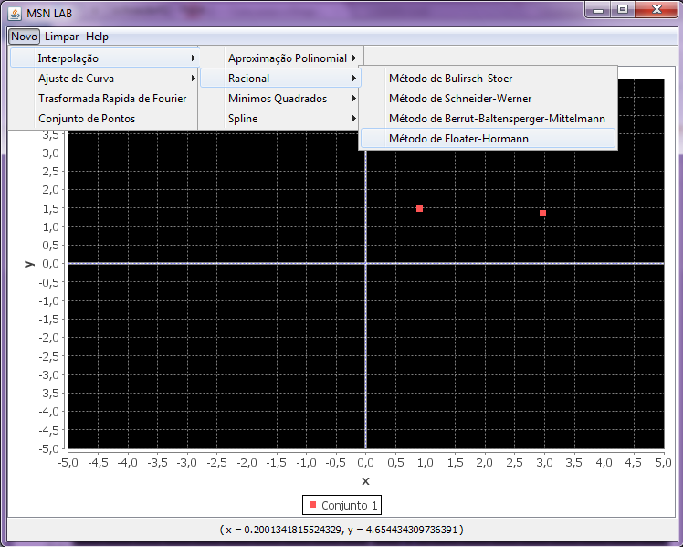
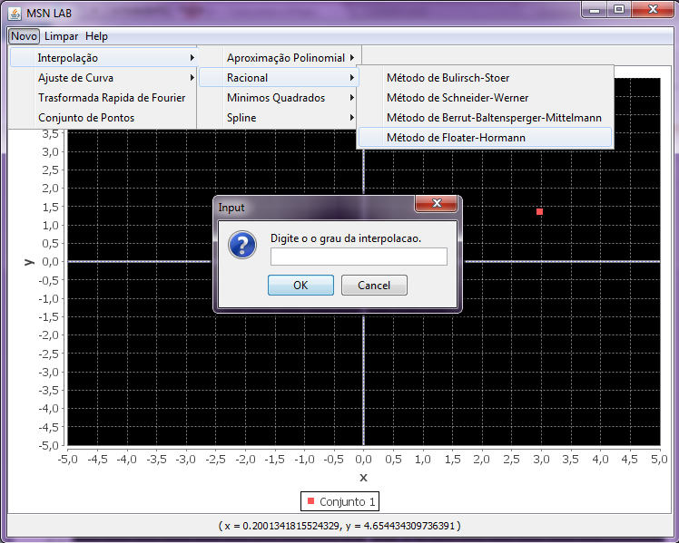
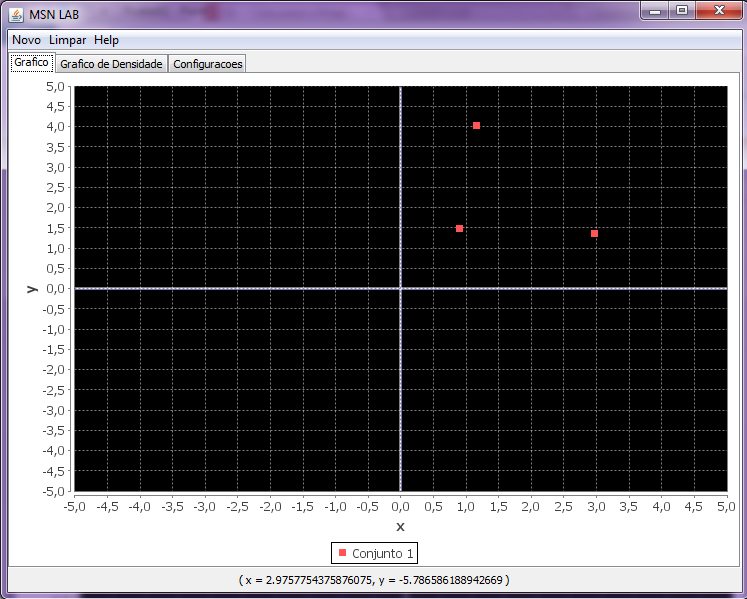

Para utilizar este metodos é necessario escolher um conjunto de pontos, como podemos ver abaixo:

Logo em seguida, clica-se em Menu Novo -> Interpolação -> Racional -> Método de Floater-Hormann

Digite o grau da interpolação.

O grafico pode ser visto desta maneira:
